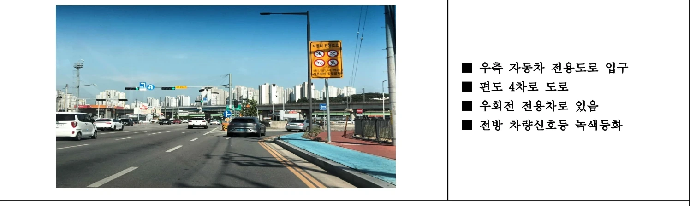

694. Which of the following descriptions about traffic safety signs are correct in the given situation? (Select TWO)

- ①An automobile road sign means that no vehicles other than a car are allowed.
- ②An unprotected left-turn sign means you can turn left safely regardless of the traffic light.
- ③The double solid yellow lines on the right indicate that parking is possible for a brief time.
- ④The blue sign depicting a car ahead on the right side is an instructional sign among traffic safety signs.
- ⑤The solid white line before the stop line at the intersection is a mark indicating that there is an intersection ahead.
Show answer
Answer
① An automobile road sign means that no vehicles other than a car are allowed.
④ The blue sign depicting a car ahead on the right side is an instructional sign among traffic safety signs.
Reference
The yellow sign on the right is a sign according to the Road Act, and the sign represented by a blue car is an instruction sign indicating an automobile-only road among traffic safety signs. The solid white line indicates the route change limit, and unprotected left turns must be made when the vehicle signal is green, and the double yellow line on the right solid line means stopping and parking are prohibited.
Reference text is a machine translation for study.